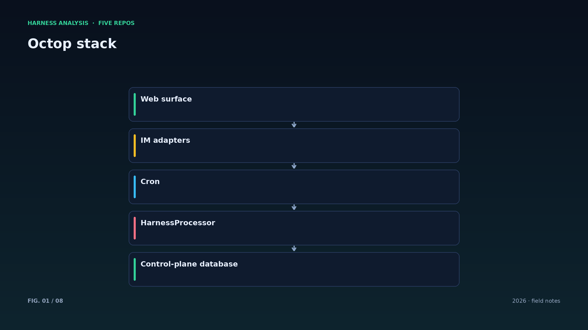
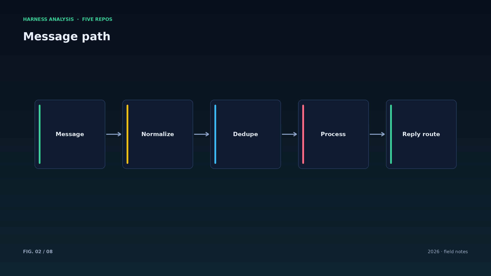
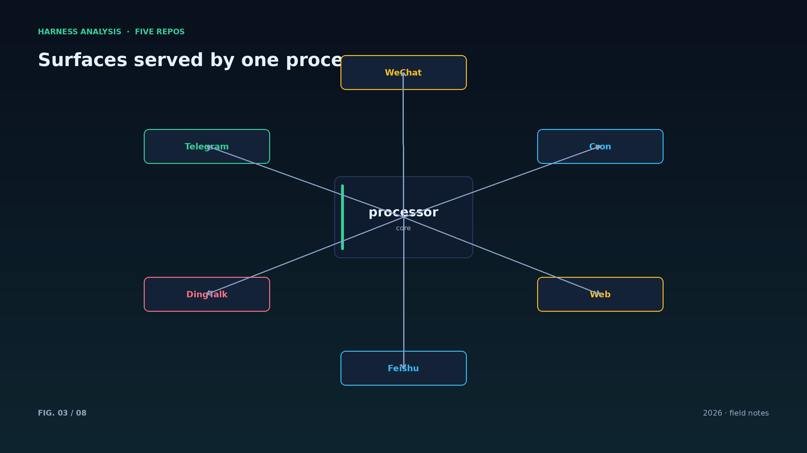
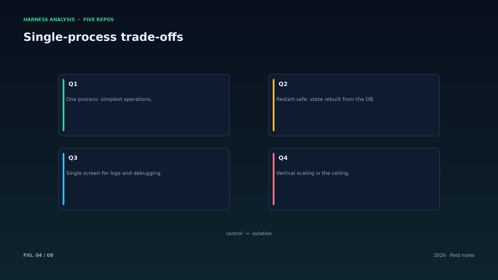
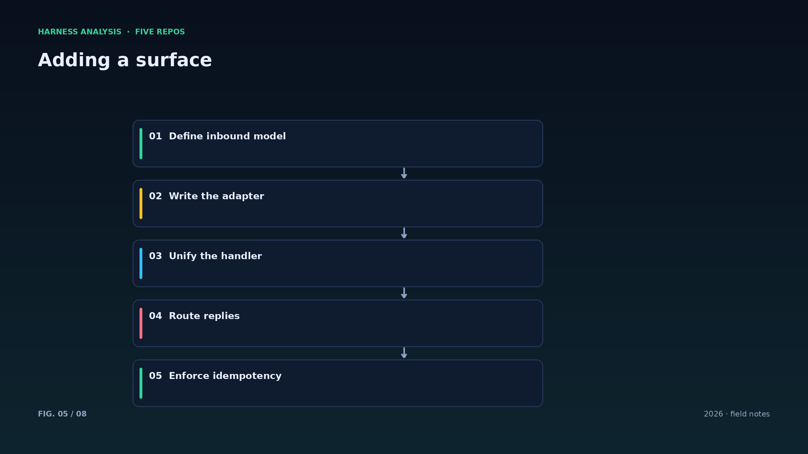
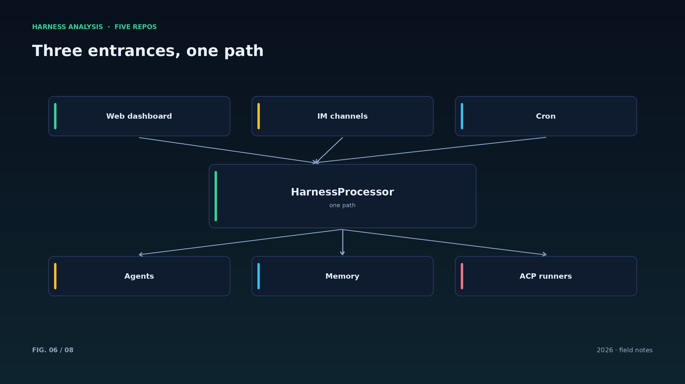
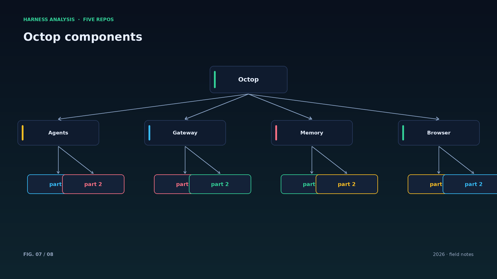
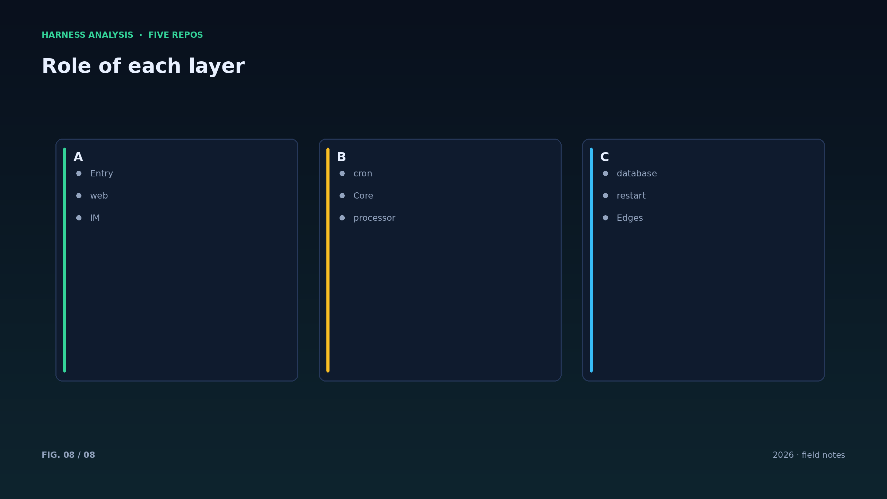

harness analysis · 06
单进程、多端入口：Octop 的反直觉架构
Single Process, Many Surfaces: Octop's Counterintuitive Architecture
当多 agent 平台纷纷上消息队列时，Octop 把 Web、IM、cron 全部塞进一个进程。这一篇分析这种取舍在什么规模下成立。
Octop 的架构图几乎简单到令人不安：三个入口适配器把消息归一化成内部事件，交给同一个 HarnessProcessor；所有状态落在 SQLite（可换 Postgres），重启后从数据库重建。多用户、专家、记忆、知识库都围绕这个单进程展开。
收益是部署与调试的极致简化：一个 `octop run` 启动全部能力，日志在一个地方，状态在一个文件里。对家庭或小团队，这比“能扩到一千节点”实在得多。
代价是扩展靠纵向：并发上去时只能加 CPU 和内存；某个入口的长任务可能阻塞其他入口（需要通过队列或异步化缓解）。Octop 通过异步处理与任务回执来控制这种影响。
一个容易被抄走的细节是回复路由：每条入站消息带着 reply_to，处理完成后由适配器把结果送回原渠道。入口千差万别，处理只有一条路——这就是多端架构的全部秘密。
单进程最大的风险是“一坏全坏”：一个入口的死循环会拖垮所有入口。缓解手段是入口级隔离（线程或进程池）与超时熔断，而不是祈祷不出错。
消息幂等要落在存储层：用 (surface, event_id) 建唯一索引，重复投递自然被拦；内存去重在重启后失效，靠不住。
单进程并不等于单线程：处理器内部用异步与工作池保证入口互不阻塞，这是 Octop 能撑住多端的前提。
数据目录要可迁移：把数据库、工作区、密钥分目录管理，升级与备份都会简单一个数量级。
多端架构的验收标准不是“Web 能用”，而是“同一条消息从任意入口进来，行为一致、回复回对地方”。
Architecture figures








ENGLISH
Single Process, Many Surfaces: Octop's Counterintuitive Architecture
While multi-agent platforms reach for message queues, Octop puts Web, IM and cron into a single process. This piece examines when that trade-off holds.
Octop's architecture is almost disarming: three entry adapters normalize messages into internal events and hand them to one HarnessProcessor; all state lives in SQLite (or Postgres) and is rebuilt from the database on restart. Multi-user support, experts, memory and knowledge bases all hang off that single process.
The gain is extreme simplicity in deployment and debugging: one `octop run` starts everything, logs are in one place, state is in one file. For a household or a small team this beats "scales to a thousand nodes".
The cost is vertical scaling: more concurrency means more CPU and memory, and a long task on one surface can block others unless queued or made asynchronous. Octop mitigates with async handling and acknowledgements.
One detail worth copying is reply routing: every inbound message carries reply_to, and the adapter sends the result back to the original channel. Entrances differ wildly; processing takes one path — that is the whole secret of multi-surface design.
The biggest single-process risk is one-bad-for-all: a hot loop in one surface can starve the others. Mitigate with per-entry isolation and circuit breakers instead of hoping nothing fails.
Single process does not mean single thread: async handlers and worker pools keep surfaces from blocking each other, which is how Octop survives multiple channels at once.
Keep the data directory portable: separate database, workspaces and secrets so upgrades and backups stay a magnitude simpler. The acceptance test is not "web works" but "any entrance behaves the same and replies land in the right place".